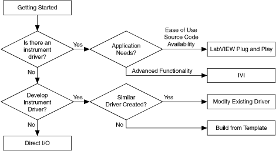

You control instruments by sending commands and data between the instrument and the computer. You can develop various LabVIEW applications to configure and control many types of instruments.
Due to the wide array of instruments and instrument control interfaces, it is important to choose the proper method of instrument control. The following flowchart can help you choose the appropriate method of instrument control.

Use instrument drivers to control and communicate with instrument hardware in a system. LabVIEW instrument drivers are sets of VIs that simplify instrument control and reduce test program development time by eliminating the need for you to learn the complex, low-level programming commands for each instrument.
When you need easy-to-use drivers with block diagram source code, use LabVIEW Plug and Play instrument drivers. LabVIEW Plug and Play instrument drivers include error handling, front panels, block diagrams, icons, and help. (Windows) When you need advanced functionality such as instrument interchangeability, simulation, and state-caching, use Interchangeable Virtual Instruments (IVI) instrument drivers. Refer to IVI on the National Instruments Web site for more information about IVI instrument drivers.
Use the NI Instrument Driver Finder to search for and install LabVIEW Plug and Play instrument drivers without leaving the LabVIEW development environment. Select Tools�Instrumentation�Find Instrument Drivers or Help�Find Instrument Drivers to launch the Instrument Driver Finder. You also can refer to the Instrument Driver Network on the National Instruments Web site for a list of other available instrument drivers, and you also can search for National Instruments drivers on the National Instruments Web site at NI Drivers and Updates.
If an instrument driver is not available, you can create a new instrument driver.
In addition to instrument drivers, you can use the Instrument I/O Assistant to communicate with message-based instruments and graphically parse the response. For example, you can use the Instrument I/O Assistant to send a query to an instrument to verify communication with that instrument.
If you do not create an instrument driver, use VISA to control GPIB, serial, USB, Ethernet, LXI, PXI, or VXI instruments. VISA is a standard API that you can use to control a wide range of instruments. VISA makes the appropriate driver calls depending on the type of instrument you use so you do not have to learn instrument-specific communication protocols.
Use NI-488.2 to develop and debug an application program. The NI-488.2 driver has high-level commands that automatically handle all bus management, so you do not have to learn the programming details of the GPIB hardware board or the IEEE 488.2 protocol. Low-level commands are also available for maximum flexibility and performance.
Use the instrument and device drivers provided on the National Instruments Device Drivers DVD to control NI modular instruments and devices for industrial automation, such as NI-CAN.